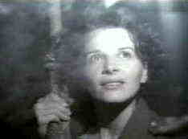
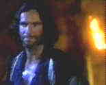
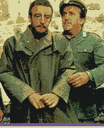
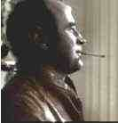

English Patient/B+/A-
Elegant
filmmaking is at a premium these days and The English Patient certainly fits into that
category. The sweeping romantic drama traverses two continents and more than a couple
romances under the artistic guidance of director Anthony Minghella. 
While this is a very good film, I
found it difficult to get involved with most of the characters. They were cold and less
than compelling. The exception is the magnificent Juliet Binoche playing Almasy's nurse
Hana. She is all passion and brings this amazing reality to her role, garnering a
well-deserved Academy Award.
The extensive Special Edition is another example of the Voyager
Company's passion for creating laser disc perfection. The transfer of the film captures
the pulchritude of director Minghella's camera. The many extras include audio commentary
from Minghella, producer Zaentz, and author Ondaatje.
Crucible/B,B+
Arthur Miller's The Crucible works best when
viewed as an allegory of the modern American Hollywood witch hunts of the late
forties and fifties. The horror of the Salem witch hunts is that much more horrifying when
viewed through the magnification of modern history.
Winona Ryder plays a single woman infatuated with married
man Daniel Day-Lewis. She conjures the powers of darkness in an vain attempt to
realize her lust and the evil spreads over the community like a suffocating blanket.
Day-Lewis is powerful in the tortured role of one of the accused and Paul Scoffield as the
chief judge is positively frightening in all his self-righteousness. Joan Allen is icy
cold as Day-Lewis' wife. The Crucible isn't always an easy film to watch. 
The laser disc captures the cold palette of director Nicholas
Hytner. Some of the dark scenes are soft due to the nature of the source material, but
otherwise it's a fine looking presentation.The THX certified disc has an exciting Dolby
Digital score. |
After the Fox/C+,B
Broad farce written by Neil Simon
that takes a swipe at the pretensions of arty Italian films. Peter Sellers plays Aldo
Vanucci, a criminal known as the Fox, who puts together a plan to take delivery of
smuggled gold through the ruse of making a movie. Sellers, as always, has his inspired
moments, but the biggest delight is Victor Mature playing the aging leading man, poking
fun  at movie stars with a
smile affixed to his face. The film is uneven but worth seeing for several of the bits and
the stars.
MGM’s Image widescreen laser disc of After the Fox is very
sharp with little or no marking. The color, while thoroughly acceptable, seems slightly
washed out. Music and dialogue are cleanly rendered in Mono sound.
Mona Lisa/B+/B+
This is a strange little 1986 movie from director Neil Jordan.
Capturing seamy settings on the fringe of the London underworld, Jordan examines the
relationship between a small time hood just released from prison and a call girl he’s
hired to protect.
 Bob Hoskins is simply terrific as the
no-nonsense hood George. Cathy Tyson is illusive as the prostitute Simone and Michael
Caine has some nice moments as George's boss.
The transfer of this atmospheric movie is solid, but the dark
textures of Jordan's vision are not easy to replicate. The disc could have had a bit more
gloss to highlight the grunge of George's world. Colors are good and the image is sharp
and clean. The big bonus is an audio commentary from Neil Jordan. There's no question that
Jordan loves this movie, which adds to the pleasure of his commentary. |